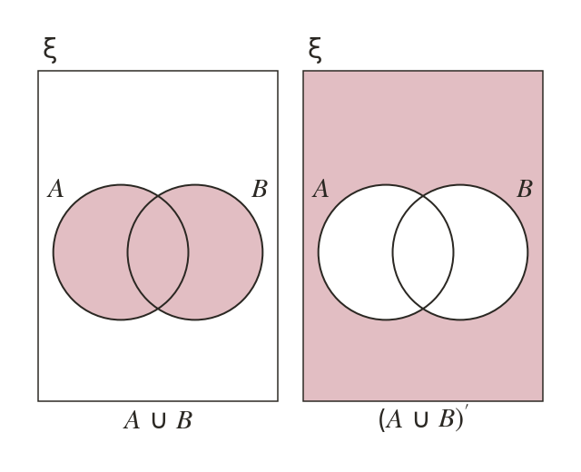
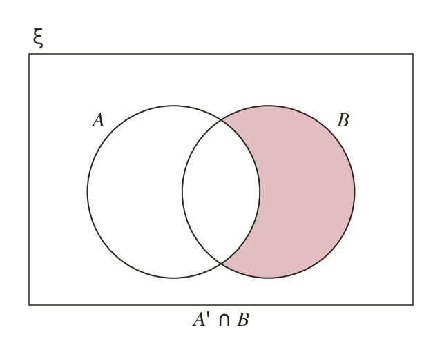
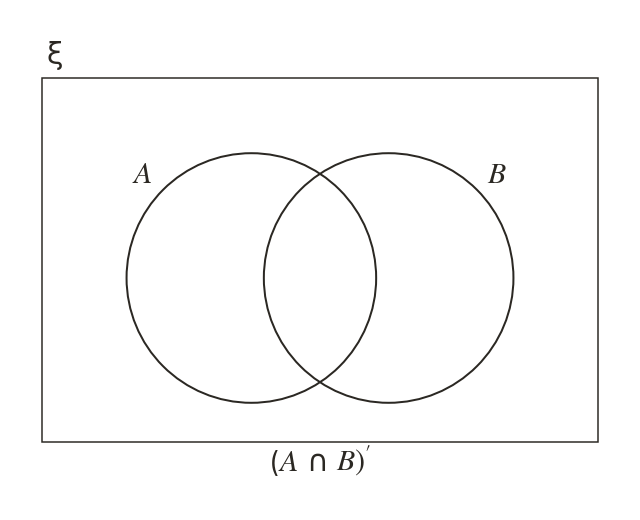
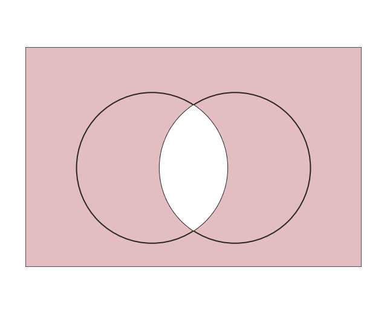
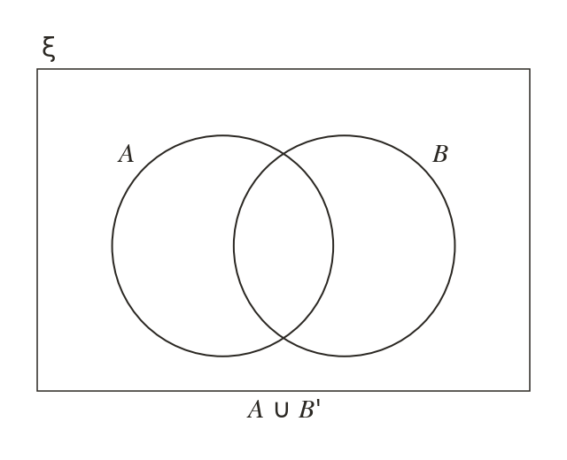
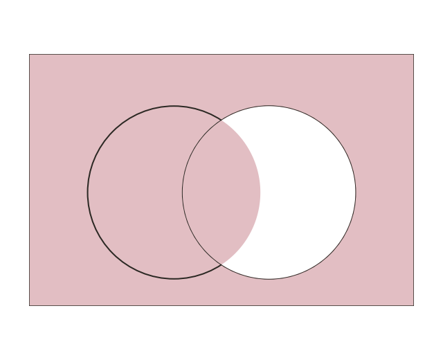
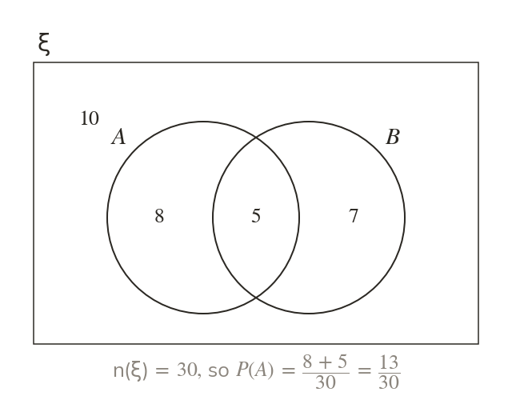
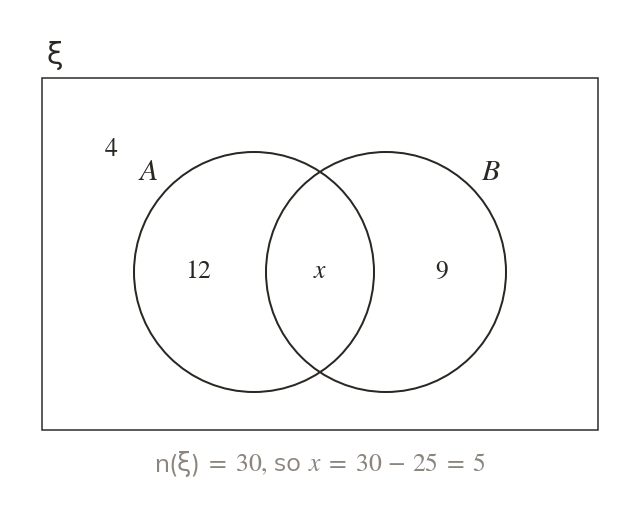
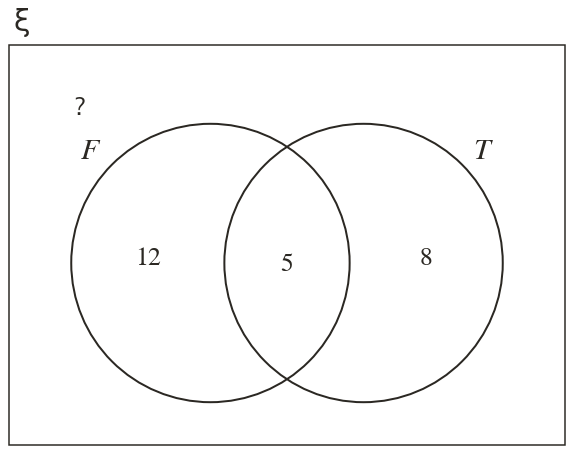
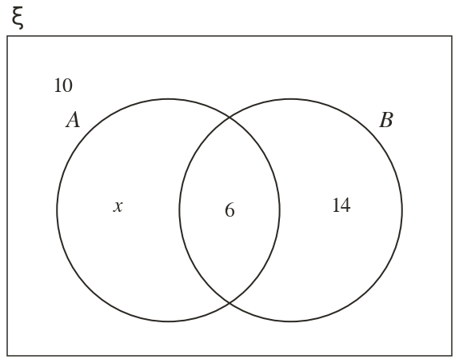

Inside out
A compound expression is read inside out, brackets first. A complement applies only to what it is attached to.
Surveys sort people into overlapping groups: who owns a cat, who owns a dog, who owns both. A Venn diagram of the counts answers probability questions about any combination at a glance.
Work down the page at your own pace. Write every answer in your book first, then click to check it.
Read each card, then follow the worked examples one step at a time.

A compound expression is read inside out, brackets first. A complement applies only to what it is attached to.

∩ is the part of outside It is 'in but not in not 'in neither'.




Pick an answer. If it's wrong, the feedback tells you which mistake it was.
Printable worksheet — the questions with room to work.
Read each card, then follow the worked examples one step at a time.

A probability from a Venn diagram is a count over n(ξ). Add every region the event covers first.

The counts in every region add to n(ξ). A given probability can also fix a missing count.


Pick an answer. If it's wrong, the feedback tells you which mistake it was.
Finished? Next lesson: 10H.3.4 Three-Set Venn Diagrams.
Log in, then search for a code to practise that skill.
Videos, worksheets and more on each part of this lesson.